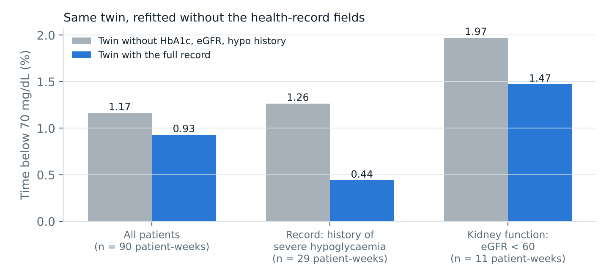

eGFR: weak kidneys clear insulin slowly, so the twin expects each unit to act more strongly.
Severe-hypo history: dose floor 80 instead of 70 mg/dL, alerts 7 mg/dL earlier.
HbA1c: sets the twin's fasting glucose.
Refitted without them: time below 70 0.93% → 1.17% (p = 0.01); with severe-hypo history 0.44% → 1.26%.
Cost: 1.3 points of time in range. Subgroups are small (29 and 11 patient-weeks). Thyroid, coeliac and genetic fields are shown to the clinician but not used.